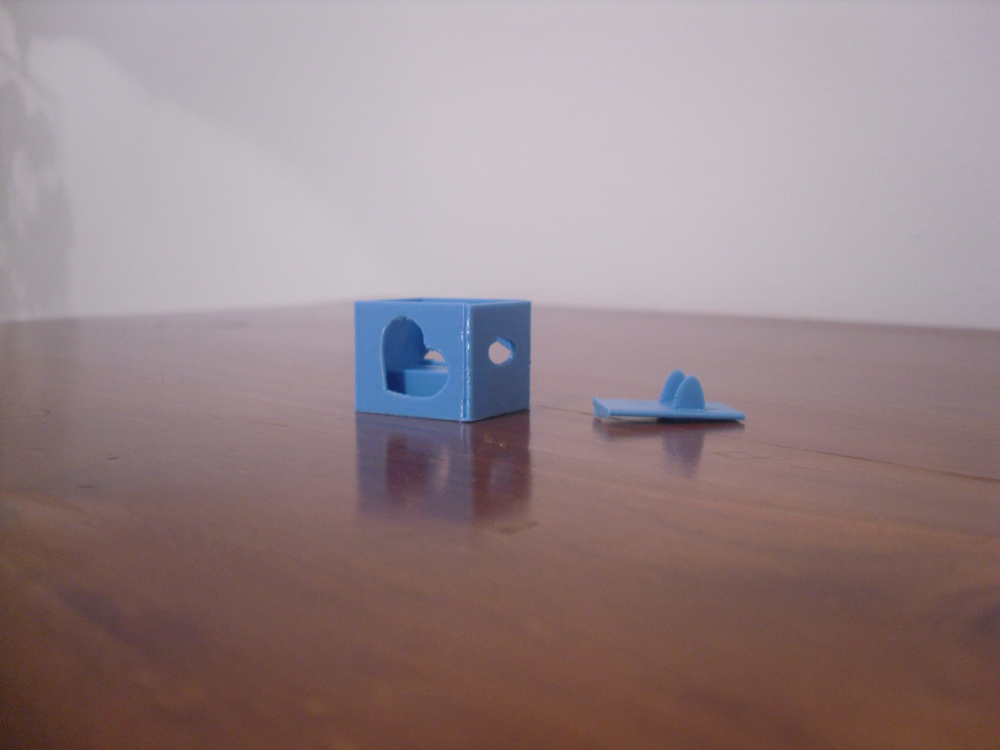
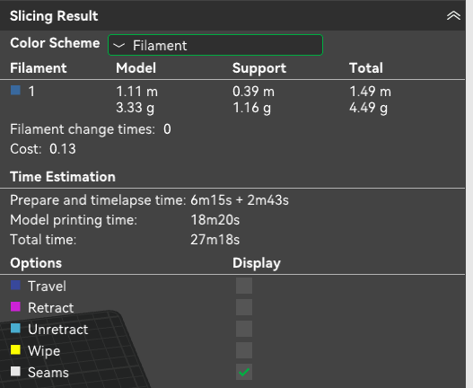

Overview
Design has major issues with sizing: device is unable to fit into the base. lid doesnt meet needs, doesnt close correctly.
Prototype #2

Printing Information

Notes
This prototype didnt meets the needs of the project goal and requirements. The lid doesnt fit correctly to the base, the base is too small to fit the device inside it due to the usb-c ports slightly out tip. Design is fun way to add air holes which add some charector but could also be done to a higher standard.
Review
This second prototype was a major improvement on the last, some postitives were the strength of the design, use of shapes to double as airflow and making the pins be used easily. The cons is the shape of the case did not fit without some extra force due to me not taking into account the size of the usb port. For the following prototype there will need to be some focus on the sizing and lid latch design.